Estimation of a stationary covariance model¶
Let  be a multivariate
stationary normal process of dimension
be a multivariate
stationary normal process of dimension  . We only treat here
the case where the domain is of dimension 1:
. We only treat here
the case where the domain is of dimension 1:  (
( ).
If the process is continuous, then
).
If the process is continuous, then  . In the discrete
case,
. In the discrete
case,  is a lattice.
is a lattice.
 is supposed a second order process with zero mean. It is
entirely defined by its covariance function
is supposed a second order process with zero mean. It is
entirely defined by its covariance function
 ,
defined by
,
defined by
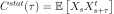
for all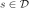
. In addition, we suppose that its spectral density function is defined, where
is defined, where
 is the set of
-dimensional positive definite hermitian matrices.
The objective is to estimate
is the set of
-dimensional positive definite hermitian matrices.
The objective is to estimate  from a
field or a sample of fields from the process , using first
the estimation of the spectral density function and then mapping
from a
field or a sample of fields from the process , using first
the estimation of the spectral density function and then mapping
 into using the inversion relation
(9), when it is possible.
As the mesh is a time grid (), the fields can be
interpreted as time series.
The estimation algorithm is outlined hereafter.
Let
into using the inversion relation
(9), when it is possible.
As the mesh is a time grid (), the fields can be
interpreted as time series.
The estimation algorithm is outlined hereafter.
Let  be the time grid on which the
process is observed and let also
be the time grid on which the
process is observed and let also
 be
be  independent
realizations of or segments of one realization of
the process.
Using (9), the covariance function writes:
independent
realizations of or segments of one realization of
the process.
Using (9), the covariance function writes:
(1)¶
where
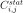
is the element of the
matrix
of the
matrix 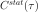
and the one of
the one of
 . The integral (1) is approximated by its
evaluation on the finite domain
. The integral (1) is approximated by its
evaluation on the finite domain 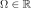
:(2)¶
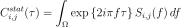
Let us consider the partition of the domain as follows:
![\Omega =[-\Omega_c, \Omega_c]](../../_images/math/0d2d1d396dd04ad04b5b0d7874edd2e977e1e939.svg) is subdivided into
segments
is subdivided into
segments  =
= 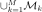
with![\mathcal{M}_k=[f_k - \frac{\Delta f}{2}, f_k + \frac{\Delta f}{2}]](../../_images/math/8d5ab377fa27bb0c2eb7a5b07cf883d29931d80b.svg)
 be the frequency step,
be the frequency step,

 be the frequencies on which the spectral density is
computed,
be the frequencies on which the spectral density is
computed,
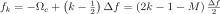
with
The equation (2) can be rewritten as:
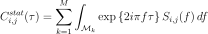
We focus on the integral on each subdomain
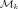
. Using numerical approximation, we have:
 must match with frequency values with
respect to the Shannon criteria. Thus the temporal domain of estimation
is the following:
must match with frequency values with
respect to the Shannon criteria. Thus the temporal domain of estimation
is the following:
 is the time step,
is the time step,
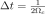
such as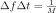
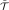
=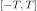
is subdivided into segments  =
=
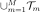
with![\mathcal{T}_m=[t_m - \frac{\Delta t}{2}, t_m + \frac{\Delta t}{2}]](../../_images/math/c9ce8f53fb6bb8bb957b87ce2d4625cfb11c3a31.svg)
 be the time values on which the covariance is estimated,
be the time values on which the covariance is estimated,

The estimate of the covariance value at time value
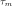
depends on the quantities of form:(3)¶
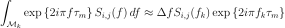
We develop the expression of and and we
get:
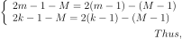

and:
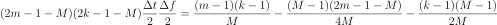
We denote :
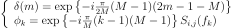
Finally, we get the following expression for integral in (3):
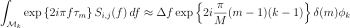
It follows that:
(4)¶
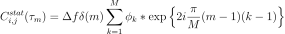
API:
See
WelchFactorySee
Hanning
Examples: